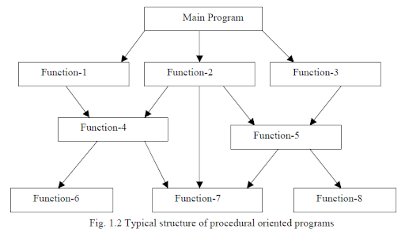
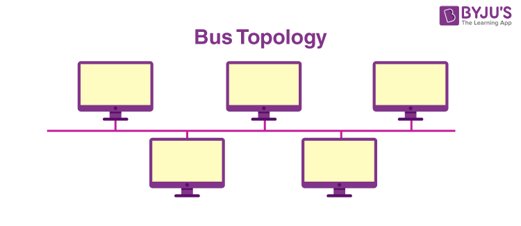
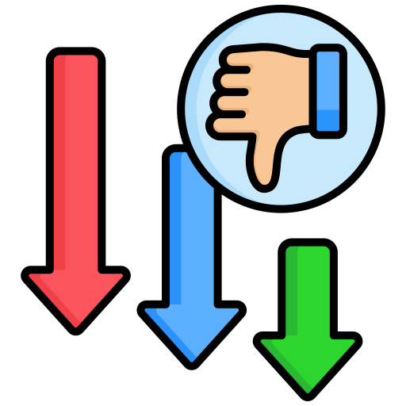
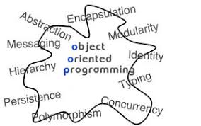

Day 8: Procedural vs Object-Oriented Programming

Procedural Oriented Programming (POP)
Main Features:
- Procedure/Function-based: The focus is on functions or procedures that operate on data.
- Sequence of Tasks: Programs are structured as a sequence of tasks or instructions.
- Global Data: Data is often shared across functions using global variables.
- Modularity: Code is divided into procedures or functions, which can be reused.
- Top-down Approach: Design starts with the high-level logic and then breaks down into smaller, more detailed procedures.

Advantages:
- Simplicity: Easy to understand and implement, especially for straightforward tasks.
- Efficient for Small Programs: Works well for small-scale applications where complex data relationships are not required.
- Less Overhead: Typically, has less runtime overhead compared to OOP.
- Ease of Debugging and Testing: Testing and debugging individual functions is straightforward.

Disadvantages:
- Poor Scalability: Becomes difficult to manage and extend for larger applications.
- Global Data Dependency: Heavy reliance on global data can lead to issues with data integrity and concurrency.
- Reusability Issues: Functions are less reusable since they often depend on global data.
- Code Duplication: Can lead to duplicate code as procedures are often written to handle specific tasks rather than generalized for reuse.

Object-Oriented Programming (OOP)
Main Features:
- Objects and Classes: Central concepts are objects (instances of classes) which encapsulate data and behavior.
- Encapsulation: Data and methods that operate on data are bundled together.
- Inheritance: Allows the creation of new classes based on existing ones, promoting code reuse.
- Polymorphism: Enables methods to operate differently based on the object they are acting on.
- Abstraction: Hides complex implementation details and shows only the necessary features.
Advantages:
- Modularity: Code is organized into discrete, self-contained units (objects).
- Reusability: Classes can be reused across different programs and projects.
- Scalability: More manageable for large-scale applications.
- Maintainability: Easier to maintain and modify due to the modularity and encapsulation.
- Real-world Modeling: Provides a closer representation of real-world entities and relationships.
Disadvantages:
- Complexity: Can be more complex to design and implement, especially for simple applications.
- Performance Overhead: May have more overhead due to features like inheritance and dynamic binding.
- Learning Curve: Steeper learning curve compared to procedural programming.
- Over-engineering: Tendency to create overly complex class hierarchies.

Key Differences Between POP and OOP:
| Aspect | Procedural Oriented Programming (POP) | Object-Oriented Programming (OOP) |
|---|---|---|
| Structure | Function/Procedure-based | Class/Object-based |
| Data Handling | Global data shared across functions | Data encapsulated within objects |
| Approach | Top-down | Bottom-up |
| Modularity | Divides programs into functions | Divides programs into objects |
| Reusability | Limited function reuse | High due to inheritance and polymorphism |
| Complexity | Simpler for small tasks | Better for complex, large-scale systems |
| Encapsulation | No direct concept | Core concept |
| Inheritance and Polymorphism | Not inherent | Key features |
| Abstraction | Limited | Extensive |